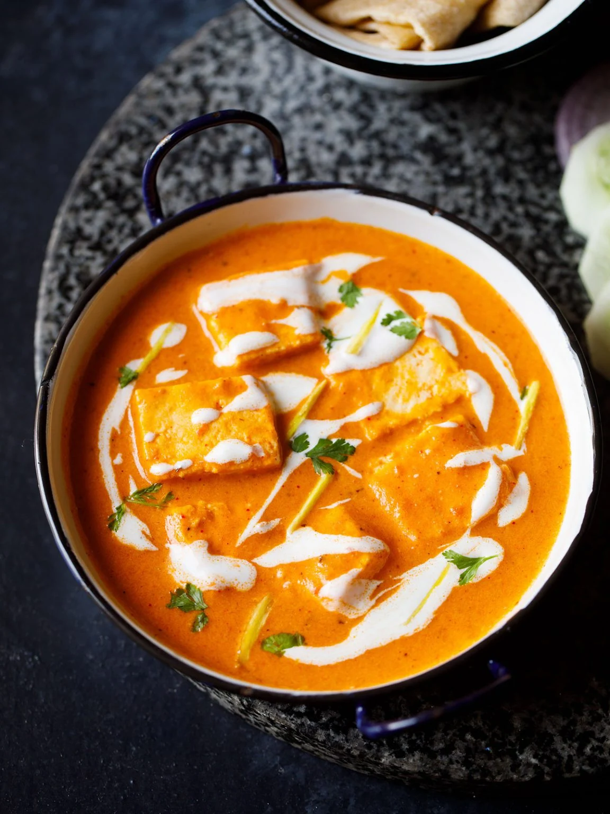

Paneer Butter Masala

Ingredients
- Tomatoes
- Cashews
- Cream
- Butter
- Paneer
- Spices and Herbs
- Onions
Procedure
- To begin with, heat a pan with oil, 1 teaspoon butter. After that, add garlic, ginger and green chillies.
- Then, tip in cubed onion and give it a fry.
- Add cashews and saute until onion turn translucent.
- Then, remove in a plate for cooling.
- Meanwhile, keep paneer cubes in hot water until use.
- Now, place the cooled items in a blender.
- After that, add cubed tomatoes (yes, raw!) on top of it.
- Then, grind to a smooth puree.
- After that, heat oil and temper with Cardamom, cinnamon and cloves.
- Add the ground onion tomato masala and tip in red chilli powder, coriander powder, turmeric, kasoori methi and saute well.
- Continue frying the masala for 4-5 minutes in medium heat or until the raw smell goes off.
- The onion tomato masala should be thick, shiny and ooze oil. Add oil in between if needed.
- After that, pour milk little at a time in low heat and stir well. Repeat again until you add all the milk to masala.
- Adjust water (I added ¼ cup) and sprinkle required salt.
- Once it start to bubble again, add paneer drained from water.
- Mix well and in goes the cooking cream.
- Keep the heat in low and don't let the gravy boil vigorously. Just cook in low heat for 2 minutes and switch off the stove.
- Garnish with 3 tablespoon of coriander leaves. Top it with remaining butter.
Serve paneer butter masala hot with soft phulkas or any Indian flat bread